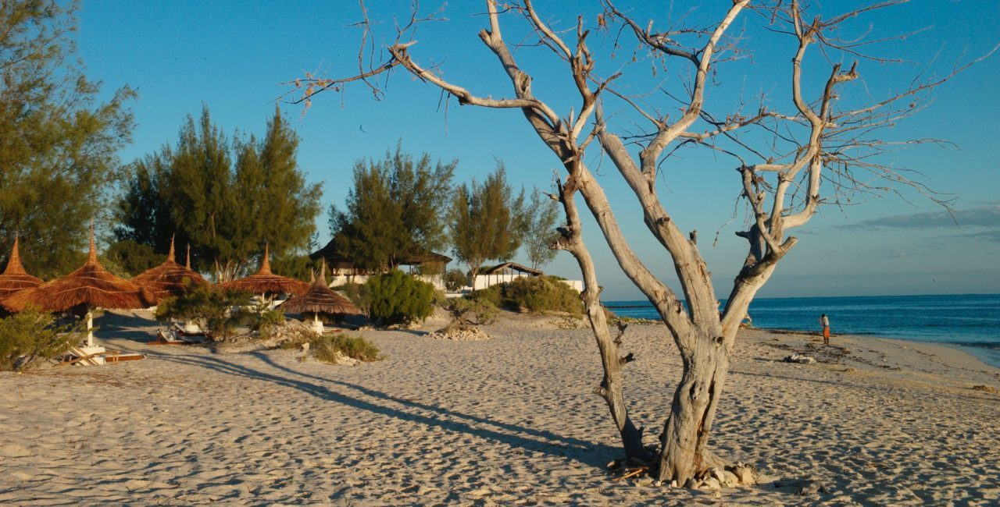
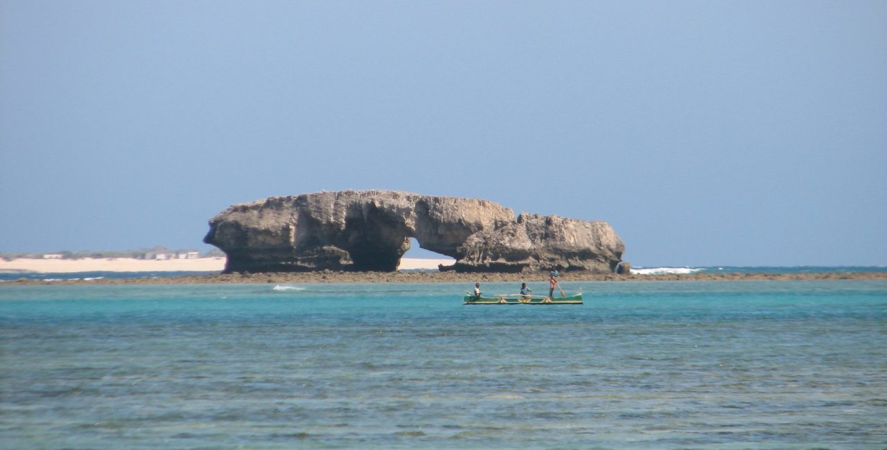
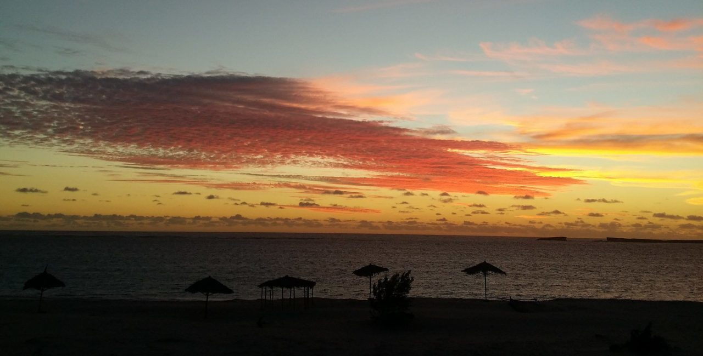
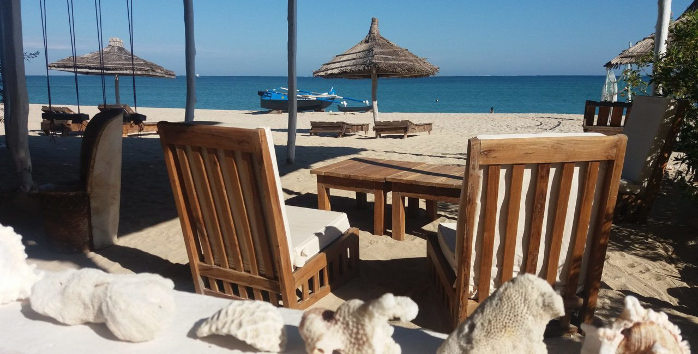

Ce sont de véritables plages paradisiaques qui vous attendent à Tuléar, loin du tumulte de la ville! La région aura pour vous un air de bout du monde, dans laquelle vous profiterez de plages désertes pourvues de sable blanc et d’eaux turquoise. Farniente est le maître mot!




Ifaty, une région riche en plaisirs
Ifaty est un village balnéaire à 30 km au nord de tuléar. C'est un village accueillant beaucoup de touristes en saison. Il y a des hôtels, des spots de plongée, des restaurants ainsi que des bars locaux qui vous ne laisseront pas...
Salary est un calme village de pêcheur, bordé par un lagon lui donnant allure de carte postale. Sur plus de 100km, le lagon d'Ambatomilo renferme la baie de Salary, l'une des plus belles plage de l'île. Sable blanc et mer turquoise à perte de...
La région est entourée de 300km de barrière récifale, ce qui vous garantit une des plus belles plage de la région. La barrière procure aux eaux d'Andavadoaka tous les atouts nécessaires : eaux turquoises transparentes, biodiversité marine...
Ambatomilo est peu connu et donc préservé du tourisme de masse, c'est ce qui fait le charme de cet endroit idyllique situé dans le Sud-ouest de Madagascar. C'est un véritable paradis donnant directement sur un lagon d'émeraude et turquoise,...
Le village d'Anakao se situe au sud de Tuléar et se trouve dans une zone protégée ayant un charme particulier. A l'extrême sud de l'île Anakao vous procurera un sentiment de bout du monde, avec ses plages désertes.